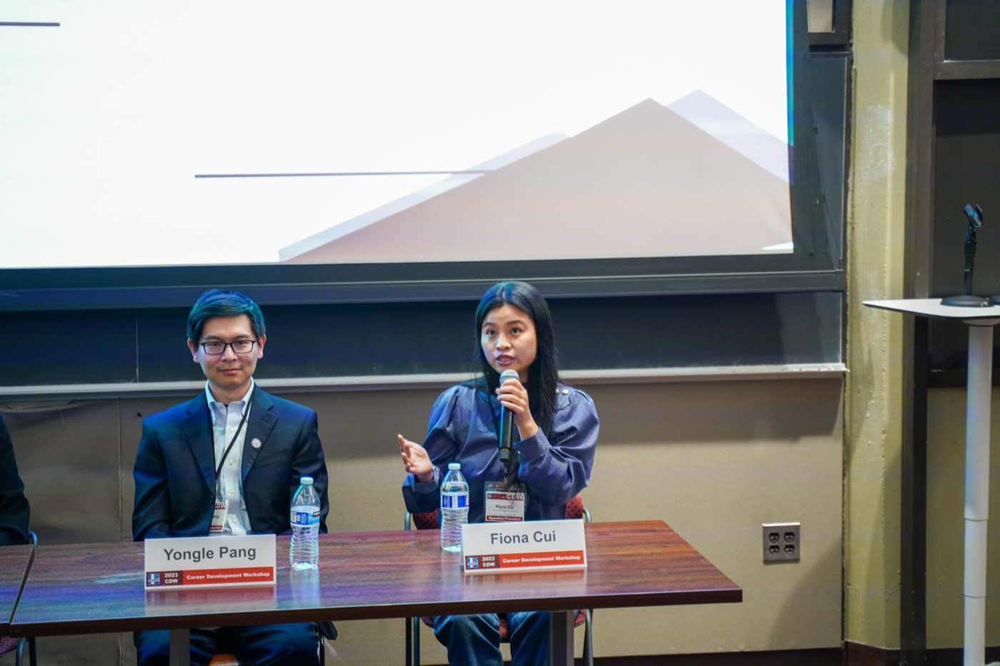
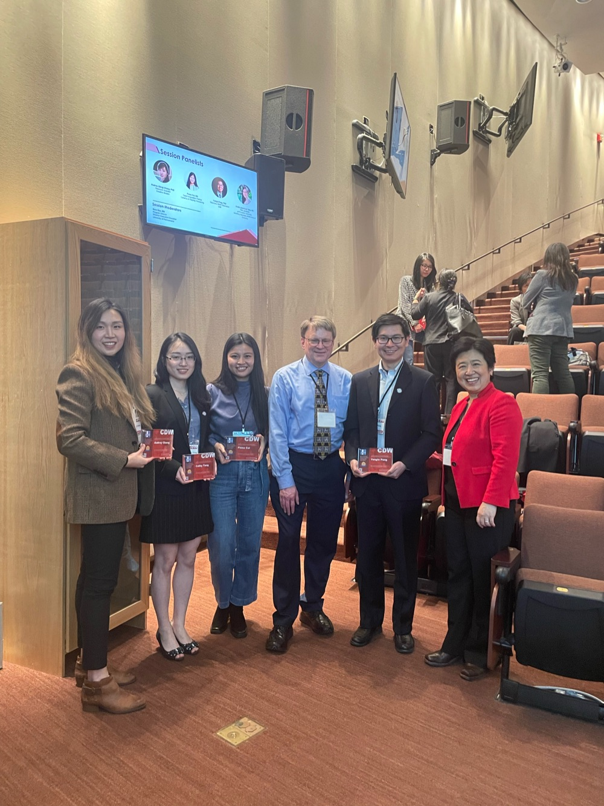

Sep 2025 – PresentVancouver, Canada
Executive Searching Recruiter
Huawei Canada
Leading AI research recruitment strategy (LLMs, Multimodal). Building pipelines from top conferences (ICCV, NeurIPS).
Global Technical & Science Recruiter
Specializing in AI/ML, LLMs, and Engineering hiring across competitive global markets. Connecting talent from Asia to North America.
 Vancouver, Canada
Vancouver, Canada
Leading AI research recruitment strategy (LLMs, Multimodal). Building pipelines from top conferences (ICCV, NeurIPS).
AI-driven sourcing for SaaS startups across North America and APAC.
Scaled Series B startup from 85 to 150 headcount. Hired niche ML Engineers and Scientists.

Redesigned recruitment workflows using Lean Six Sigma, reducing time-to-hire.
Managed HR operations across 8 countries. Built sales teams from scratch in New Delhi.
So I build my own sourcing tools.
Finds AI engineers through the open-source code they ship
Turns a hiring brief into searches across all of GitHub, ranks people across several communities at once, and shows what each person actually changes. Runs locally on the GitHub API and a local language model, with no paid AI services.
A searchable pool of ML researchers from conference papers and citations
Collects authors from ML conference papers and expands through Semantic Scholar citations and CSRankings. Verifies GitHub identities, maps co-author networks, and lets AI assistants query the pool through an MCP server that hides contact details by default.
Private repository: it holds candidate data.
Ranks the best interview times for candidates and interviewers
Candidates and interviewers mark when they're free on a weekly calendar from a shared link, with no accounts. Ranks the slots that work for everyone across time zones, and saves responses across browsers and restarts.
I volunteer my time through career workshops and online sessions that usually reach 100+ people.


Shared how candidates can stand out in North American interviews, from a recruiter's point of view.
Coached scientists on answering "Tell me about yourself" in under three minutes, and on using small talk to set a relaxed, equal tone with the interviewer.
Spoke on hiring and career growth as Talent Acquisition Partner at Cellarity (Flagship Pioneering).